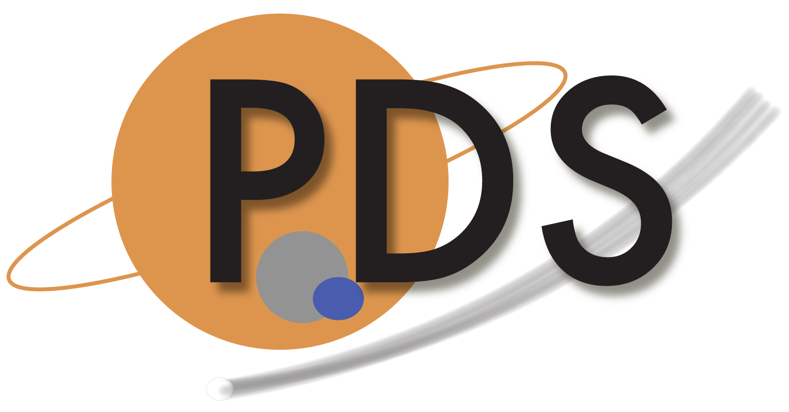

PDS Data Dictionaries 
Getting Started:
Getting Started
Getting to Know Your LDD Repo
Development
LDD Creation Process
LDD Update Process
LDD How-To Guides
LDD Build Process
LDD Release Process
Teams
LDD Change Control Board
PDS DD Stewards
Support
Contact Us
Contribute
Request a New LDD
Request a New LDD Class or Attribute
Report a Bug
User Forum
Github Help
Tutorials
PDS Data Dictionaries
»
Index
Index